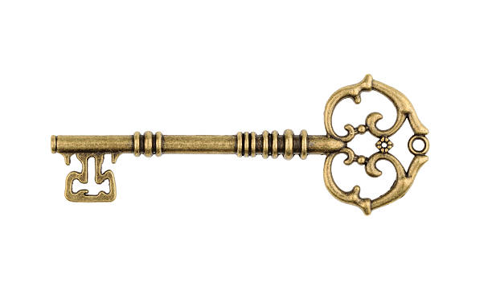

You casted the spell using the quivered voice you have. Trying your best to chant the spell in the most quiet manner so that the Duke will not notice. Fortunately, you finished the chant without his interruption.
The spell successfully stunned the duke, and you sneaked behind the Duke. It is time to stab that magistic knife into the Duke's body.
Stab it in!!!
"Ahhhhhh", the Duke roared with pain as the knife stabbed into his body. You laughed with the sense of achievement.
The instrument dropped from his hands. His arms appeared to be fastened to his sides. He kneeled down with pain, and his feet and back had trembled with great pain. Blood was everywhere. The knife glowed brighter as it sucked in more blood of the Duke. The Duke could not even make a sound, as the tremendous amount of pain crushed him and his nerves. The knife, after a while, dropped from his back, and stopped glowing. The Duke had become a corpse.
All this happened in a sudden, and so short in time that only astonishment was in your head. Long before anyone could do anything to save the Duke, the Duke had become a corpse. His body had melted down due to the power of the magistic knife, what is left is his skull, with nothing inside. You had finished the quest and take down the tyrant.
In the room, you picked up the sword that the Duke used before, and you searched around the room. There was not many stuff inside, as the Duke also had just arrived. However, you find a key dropped out from the Duke's pocket, which looks like a door key. But you do not know which room's key it is.
After a careful search of the room, you figured out that the room was one-wayed. If you want to exit you have to talk the same route as you enter.
Exit the room.